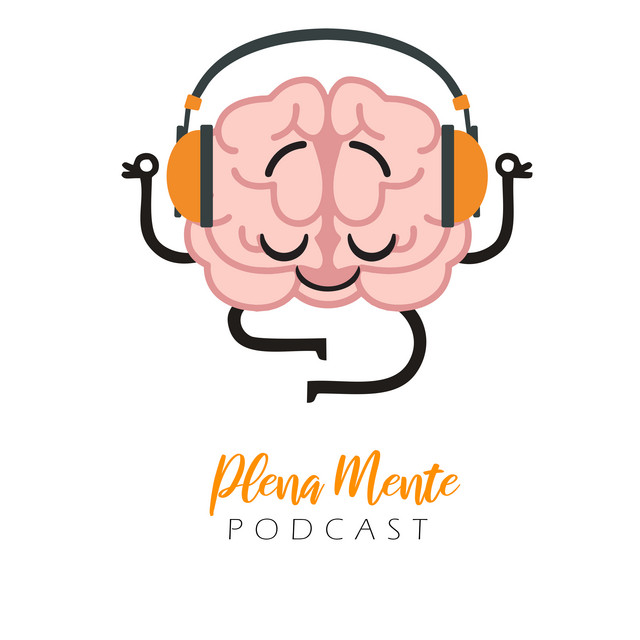
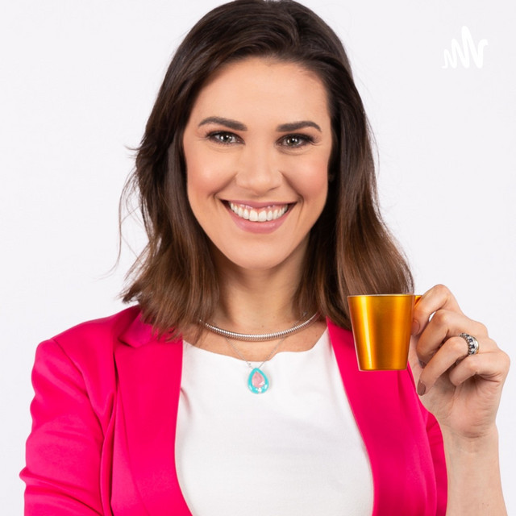
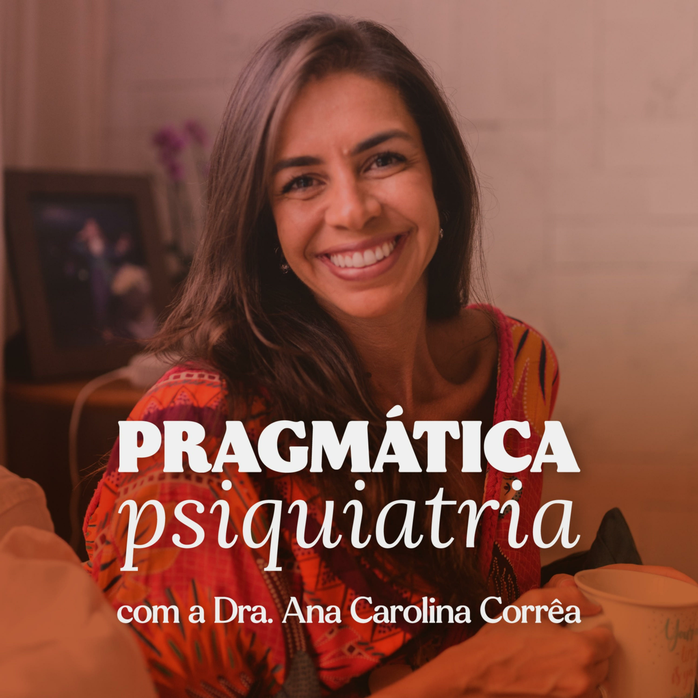

Podcasts
Podcasts que podem servir como uma forma de apoio
a pessoas com transtorno de ansiedade.

Plena Mente
Este podcast foca na prática da atenção plena (mindfulness)
como uma ferramenta eficaz para lidar com a ansiedade generalizada.
Os episódios incluem meditações guiadas, exercícios de respiração e
conversas com especialistas sobre a importância do autocuidado emocional.

Sobre
Por Sofia Lima
"O Plena Mente é um podcast quinzenal sobre autoconhecimento
psicologia, consciência corporal, meditação
qualidade de vida e bem-estar!
Eu, Sofia Lima, serei sua guia turística nesta jornada para dentro de si mesm@!
Vem comigo!"
Psicologia
na Prática
"Eu sou Alana Anijar, sou psicóloga, especialista em Terapia Cognitiva Comportamental
e sou apaixonada por trazer a Psicologia de forma prática e acessível,
para que você possa aplicar no seu dia a dia e construir uma vida mais leve.
Gosto também de compartilhar um pouco da minha vida que possa te inspirar e te ajudar de alguma forma."
Sobre
Por Alana Anijar
"Aqui, você vai encontrar semanalmente conteúdos práticos,
simples e acessíveis para que possa aplicar os
conceitos da Psicologia no seu dia-a-dia.
Saúde mental, autoestima, autoconhecimento, inteligência emocional e muito mais!
Me siga nas redes sociais para mais conteúdos @alanaanijar."
Tratando
Sua Ansiedade
"Sou Laura Potrich, psicóloga especialista no tratamento da ansiedade.
Ao longo de 8 anos venho ajudando pacientes no Brasil e no mundo,
através de psicoterapia presencial e online, a ter uma vida mais leve e menos preocupada.
Neste último ano, com todos os desafios e perdas que sofremos, depois de mais de 1.000
atendimentos psicoterapêuticos e dezenas de palestras que dei em empresas, percebi que
haverá uma epidemia e será a segunda maior vilã desta década, que será a ansiedade, se
você não aprender a vencer suas dificuldades do agora, o pensamento acelerado e a
preocupação em relação ao futuro."

Sobre
Por Laura Tomasini Potrich
"Neste canal você encontrará conteúdo e dicas
de como você pode controlar sua ansiedade
e ter uma vida mais leve.Episódios quinzenais!
Você me encontra no Instagram no perfil @tratandosuaansiedade
e no site www.tratandosuaansiedade.com.br"
Pragmática Psiquiatria
"Estar com o outro ajuda a me enxergar melhor e criar um olhar mais ampliado sobre emoções e comportamentos."
"Através da experiência de uma psiquiatra apaixonada pelo que faz
e pela arte através das palavras decidi dividir alguns conhecimentos."
